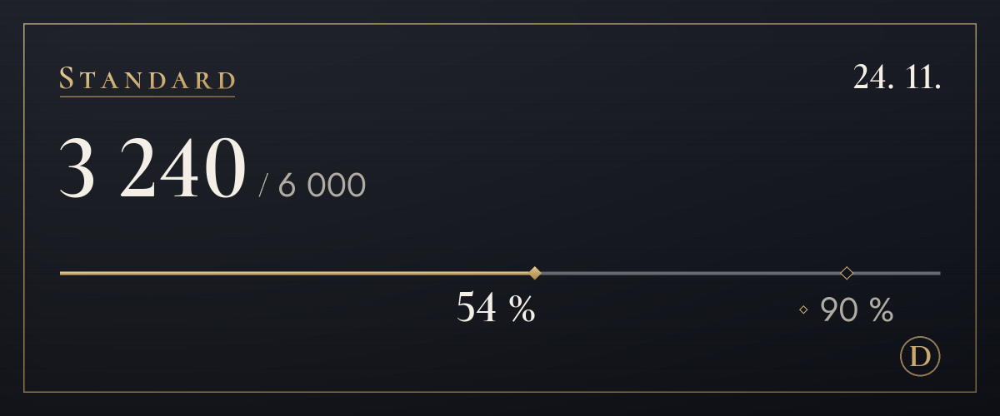

Tarify
Začni zdarma a tarif změň, až budeš potřebovat víc.
Probíhá zkušební provoz, takže zatím nepřijímáme platby. Jakmile se platby spustí, předplatné si na této stránce sjednáš i zrušíš. Během zkušebního provozu se překlad po překročení limitu nezastaví.
Free
0 $
Nejdřív si to vyzkoušej (zobrazení originálu se nepočítá)
100 překladů měsíčně (asi 3 denně), 4 tóny na prvních 14 dní
Ze stejného limitu se čerpá i text na obrázcích (obvykle 4 za obrázek) a překlad v obrázcích (obvykle 6)
Zobrazit, jak začítLite
4,99 $/měs.
Tón si vybereš pro každý server: s přáteli tykání, na novém místě vykání
1 200 překladů měsíčně (asi 40 denně), 4 tóny, po vyčerpání limitu ještě 20 denně
Ze stejného limitu se čerpá i text na obrázcích (obvykle 4 za obrázek) a překlad v obrázcích (obvykle 6)
Vybrat (Lite)Standard
Doporučujeme
9,99 $/měs.
Bohatě stačí na každodenní chatování
6 000 překladů měsíčně (asi 200 denně), 4 tóny, po vyčerpání limitu ještě 20 denně
Ze stejného limitu se čerpá i text na obrázcích (obvykle 4 za obrázek) a překlad v obrázcích (obvykle 6)
Vybrat (Standard)Plus
14,99 $/měs.
Nejvíc překladů pro ty, kdo překládají hodně
20 000 překladů měsíčně (asi 667 denně), 4 tóny, po vyčerpání limitu ještě 20 denně
Ze stejného limitu se čerpá i text na obrázcích (obvykle 4 za obrázek) a překlad v obrázcích (obvykle 6)
Vybrat (Plus)
- Ceny jsou v amerických dolarech. Daň platná ve tvé zemi se připočte při placení.
- Placené tarify jsou měsíční předplatná, která se automaticky obnovují. Zrušit je můžeš kdykoli a další platba se už nestrhne.
- Tarif Free se nikdy sám nezmění na placený.
- Právo na odstoupení od smlouvy je u již využité části omezené a nejdřív si můžeš vyzkoušet tarif Free.
- Překlady dělá AI (Claude od Anthropic). Může se splést, takže u důležitých věcí zkontroluj i originál.
- Podrobnosti najdeš v dokumentech Podmínky používání a Zásady vrácení peněz.
Jak se počítají překlady
Limity tarifů se počítají v překladech. Jedna zpráva přeložená do jednoho jazyka je 1 překlad.
- Text
- 1 za zprávuDlouhé zprávy se počítají o 1 víc za každých 200 znaků korejštiny, čínštiny nebo japonštiny, nebo za každých 500 znaků v ostatních jazycích. Zprávy, ve kterých není co přeložit, se nepočítají.
- Překlad pravým tlačítkem
- 1 za zprávuStejně jako text. Zobrazení originálu nebo jiného jazyka se nepočítá.
- Text na obrázcích
- Obvykle 4 za obrázek3 za přečtení obrázku plus překlad přečteného textu. Obrázky bez textu se nepočítají a z jedné zprávy se čte až do 4 obrázků.
- Překlad v obrázcích
- 6 za jeden textový blok3 za přečtení, 1 za překlad a 2 za vykreslení. Každý další blok přidá aspoň 1 za svůj překlad a každých 16 bloků se počítá jako jeden obrázek. Při víc než 16 blocích nejdřív uvidíš cenu a překlad se vloží, až to potvrdíš (nejvýš 128 bloků). Změna písma se nepočítá.
- Hlasové zprávy Již brzy
- 1 za sekundu zvukuPřipravujeme přepis a překlad hlasových zpráv poslaných z mobilní aplikace. Po spuštění se k tomu přičte překlad toho, co zaznělo, a zprávy bez řeči se počítat nebudou.
- Denní limit
- 200 obrázkůLimit se počítá pro každého zvlášť a v každém tarifu stejně, aby hromadné automatické používání nemohlo zastavit překlady všem ostatním.
- Kdo platí
- Překlady otevřené ikonami pod obrázky nebo pravým tlačítkem se počítají tomu, kdo klikl, ne tomu, kdo zprávu zveřejnil.
Například
Při 200 překladech denně
Standard přepočtený na den
Stačí na překlad několika obrázků a pořád ještě na celý večer povídání.
Při 40 překladech denně
Lite přepočtený na den
Stačí na hodinu povídání s kamarády.

/preklad vyuziti.Časté dotazy
Kdy se spustí platby?
Probíhá zkušební provoz, takže platby nepřijímáme a všichni používají tarif Free. Platby spustíme, až dokončíme registraci podnikání a napojení platební brány. Datum oznámíme v novinkách na serveru podpory a na této stránce. V Koreji se platí ve wonech, všude jinde v amerických dolarech.
Jak zruším předplatné?
Jakmile se platby spustí, předplatné zrušíš na stránce s tarify na tomto webu, tedy tam, kde ho sjednáváš. Po zrušení se další platba už nestrhne a tarif ti zůstane do konce zaplaceného období. Sem vede i obrazovka správy tarifu v panelu nastavení bota.
Jak funguje vracení peněz?
Za první platbu můžeš do 7 dní dostat zpět celou částku. Peníze vracíme i při výpadcích služby nebo když služba neodpovídá popisu na této stránce. Zbytek najdeš v dokumentu Zásady vrácení peněz.
Ukládají se obrázky?
Bot je neukládá. Obrázky se posílají společnosti Anthropic, aby se přečetl text, a ty uvidíš jen výsledek. Dokud nestiskneš tlačítko, nic se neposílá. Přečtený text se také neukládá; jen překlad se řídí pravidlem mezipaměti překladů (30 dní). Obrázek, u kterého stiskneš „Vložit překlad“, zůstane 15 minut v paměti spolu s přečteným textem a jeho překladem, aby se po změně písma dal hned překreslit.
Kdo dělá překlady?
Překlady dělá AI (Claude od Anthropic). Stejná AI čte text na obrázcích. Překlady můžou být chybné, takže u důležitých věcí zkontroluj i originál. Obrázky s vloženým překladem mají v popisu (alternativním textu) i v poznámce pod výsledkem uvedeno, že jde o překlad od AI.